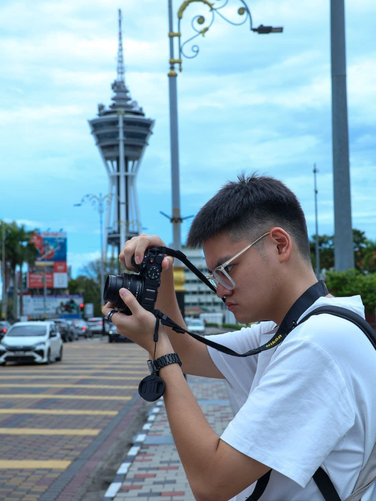

- Formal EducationComplete BA in Visual Arts with Photography specialization
- Apprenticeship1-year internship with award-winning photojournalist Maria Chen
- Technical CertificationMaster Adobe Lightroom and Photoshop through certified courses
- Portfolio DevelopmentCreate 3 distinct photography series showcasing different styles
- Industry ExposureExhibit work in 5 local galleries and photography festivals
- Business FoundationEstablish freelance client base and small business operations
- SpecializationDevelop signature street photography style and brand identity

The development process - both in dream and career